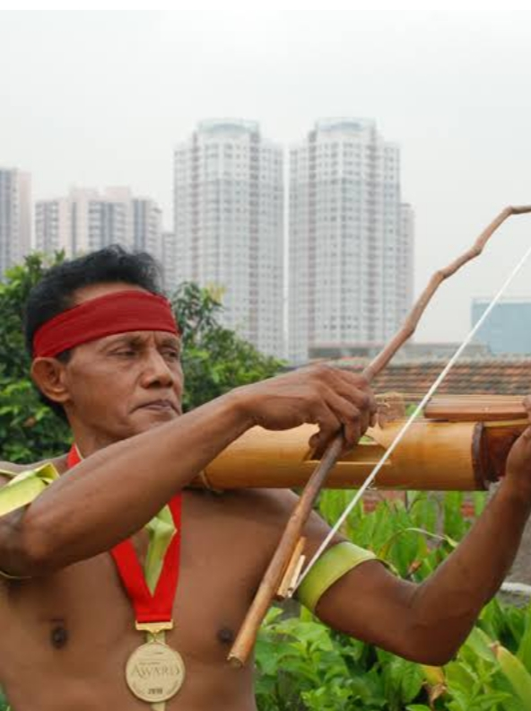
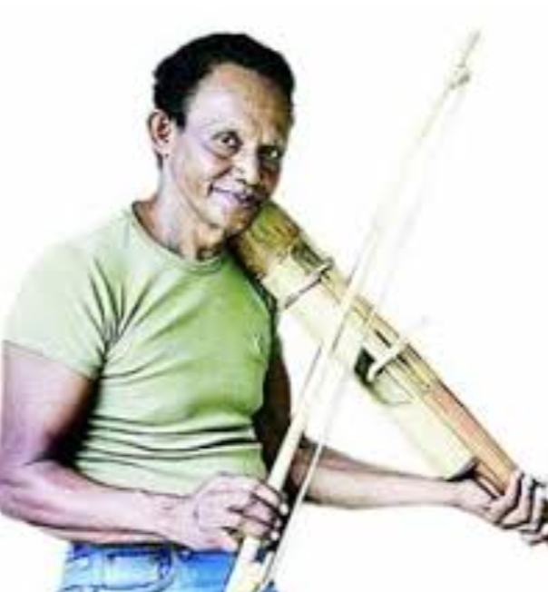

KHAS DARI DAERAH KEI
pengertian
Ekal adalah alat musik tradisional yang terbuat dari bambu yang berasal dari Maluku, kepulauan kei, Indonesia bagian timur, yang dimainkan dengan cara digesek seperti biola pada umumnya.
karakteristik
- Bentuknya mirip biola.
- Terbuat dari kayu bambu dan rotan.
- Memiliki 2-4 senar yang asli dari kulit bambu.
- Dimainkan dengan busur.
- dan di ujung biola tersebut terdapat perahu melambangkan orang kei pada jamam dulu
- musik ekal di mainkan dengan cara di gesek
- leh iswan wan alat musik yang di mainkan dengan cara di petik dan terbuat menggunakan bambu
- dehir alat musik ini di mainkan dengan cara dipukul dan terbuat juga dari bambu
memiliki 3 jenis cara memainkan alat musik asli kei ini
fungsi alat musik ini
- Mengiringi tarian tradisional.
- Mengiringi nyanyian daerah.
- Digunakan dalam upacara adat.
- Sebagai simbol kebudayaan Maluku,kepulawan kei kahs dari daerah kei.
Kebudayaan!
alat musik Ekal merupakan bagian penting dari kebudayaan suku-suku di Pulau Kei dan Tual,Maluku Tenggara
yang wajib di jaga dan di lestarikan anak bangsa
penting nya anak generasi mudah untuk sadar akan nilai budaya yang seiring meluntur dan pudar termakan zaman yang semakin maju,
jika tidak di perhatikan dan dijaga atau di lestarikan semua sisa sisa budaya daerah akan hilang !!
dan di gantikan semua dengan budaya asing "pakian adat, rumah adat, makanan daerah, dan alat musik, lagu," asli kei semua akan di gantikan dengan budaya asing .Pelestarian
Pemerintah dan masyarakat Maluku berupaya melestarikan ekal melalui:- Pendidikan musik tradisional.
- Pertunjukan seni budaya.
- Dokumentasi sejarah.
- Promosi pariwisata budaya.